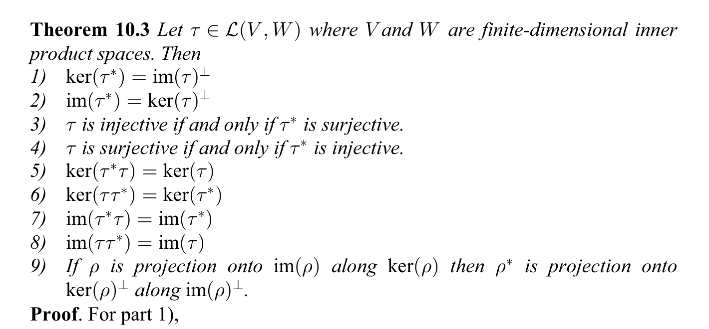

Adjoints and The Spectral Theorem
Adjoints
For more details and exercises related to this material, see Chapter 10 of Roman’s Advanced Linear Algebra.
Suppose V and W are finite dimensional inner product spaces (over \mathbb{R} or \mathbf{C}). We will use the bracket notation \langle,\rangle for the inner products on both spaces. Let f:V\to W be a linear map.
Proposition: There is a unique linear map f^{*}:W\to V such that \langle f(v),w\rangle = \langle v,f^{*}(w)\rangle for all v\in V and w\in W. The map f^{*} is called the adjoint of f.
Proof: Let v_1, \ldots, v_n be an orthonormal basis for V and let w_1,\ldots, w_m be an orthonormal basis for W. If f^{*} exists, it must satisfy \langle f(v_{i}),w_{j}\rangle = \langle v_{i},f^{*}(w_j)\rangle for all 1\le i\le n and 1\le j\le m. So let’s define f^{*}(w_{j})=\sum_{i=1}^{n} a_{i}v_{i} where a_{i} = \overline{\langle f(v_{i}),w_{j}\rangle}.
This extends to a linear map W\to V by linearity and it’s clearly well-defined. In addition \begin{aligned} \langle v_k,f^{*}(w_{j})\rangle &= \sum_{i=1}^{n} \overline{a_{i}}\langle v_{k},v_{i}\rangle \\ &=\overline{a_{k}} \\ &=\langle(f(v_{k}),w_{j})\rangle \end{aligned}
This shows that f^{*} has the desired property (and also that f^{*} is unique).
It is possible to prove the linearity of the adjoint without appealing to bases in this way; see Roman if you are interested in this.
One consequence of the computation in the proof is that if E is an orthonormal basis for V then [f]_{E}^{*} = \overline{[f]_{E}}^{\top} .
To check this, we compute:
\begin{aligned} \langle f(u),v\rangle &= ([f]_{E}[u]_{E})^{\top}\overline{[v]_{E}} \\ &= [u]_{E}^{\top}[f]_{E}^{\top}\overline{[v]_{E}}\\ &= [u]_{E}^{\top}\overline{[f]_{E}^{\top}[v]_{E}} \\ &= \langle u,f^{*}(v)\rangle \end{aligned}
The adjoint operation has the following properties.
These all follow from the definition fairly easily. Let’s look at the third one. Assume V=W. Then \langle f(g(v)),w)\rangle = \langle(g(v),f^{*}(w))\rangle = \langle v,g^{*}f^{*}w\rangle
so (fg)^{*}=g^{*}f^{*}.
Adjoints and orthogonality
As before, let V and W be finite dimensional inner product spaces and let f:V\to W be a linear map. Then we have the following properties (from Roman, Advanced Linear Algebra, Theorem 1.3, page 202. )

The proofs of these are applications of the definitions. Here are a few proofs.
\mathrm{ker}(f^{*})=\mathrm{image}(f)^{\perp}. Suppose w\in\mathrm{ker}(f^{*}). Then \langle v,f^{*}w\rangle=0 for all v. Thus \langle f(v),w \rangle is zero for all v, and therefore w is in \mathrm{image}(f)^{\perp}. Conversely, if w\in\mathrm{image}(f)^{\perp}. Then \langle f(v),w\rangle=0 for all v, and then \langle v,f^{*}w\rangle=0 for all v. Since the inner product is definite, this means f^{*}w=0 or w\in\mathrm{ker}(f^{(*)}).
f is injective if and only if f^{*} is surjective. If f is injective, then \mathrm{ker}(f)=\mathrm{image}(f^{*})^{\perp}=0 so \mathrm{image}(f^{*}) must be all of V.
\mathrm{ker}(f^{*}f)=\mathrm{ker}(f). Clearly \mathrm{ker}(f^{*}f) contains \mathrm{ker}(f). On the other hand, if v\in \mathrm{ker}(f^{*}f), then \langle f^{*}fv,v\rangle=\langle fv,fv \rangle = 0 so f(v)=0.
Orthogonal and Unitary Diagonalizability
In this section, we will return to the question of diagonalizability in the setting of inner product spaces.
Definition: Let V be a (real or complex) inner product space of dimension n. A linear map f:V\to V is unitarily diagonalizable (or orthogonally diagonalizable in the real case) if there is an orthonormal basis for V consisting of eigenvectors for f.
Equivalently, f is diagonalizable if V can be written as a direct sum V = E(\lambda_1)\oplus E(\lambda_2)\oplus\cdots\oplus E(\lambda_k)
where the \lambda_j are distinct, each E(\lambda_j) is an eigenspace for f with eigenvalue \lambda_j, and E(\lambda_i)\perp E(\lambda_j) when j\not i.
We would like to characterize unitarily diagonalizable matrices. Notice that if f is unitarily diagonalizable and E=\{u_1,\ldots, u_n\} is an orthonormal basis in which [f]_{E} is diagonal, and \lambda_j is the eigenvalue for u_{j}, then the matrix [f^{*}]_{E} of the adjoint f^{*} is also diagonal with diagonal entries \overline{\lambda_{j}}. As a result, [f]_{E} and [f^{*}]_{E} commute with one another, and therefore so do f and f^{*}.
Definition: A linear map f is called normal if ff^{*}=f^{*}f.
We will ultimately establish that, for complex vector spaces, the normal property characterizes unitarily diagonalizable maps. Over the real numbers the characterization of normal matrices is somewhat more complicated. See Roman, Theorem 10.19, page 247.
Proposition: Over \mathbf{C}, f is normal if and only if it is unitarily diagonalizable.
We will work our way up to this result. First, notice that:
- a linear combination of normal operators is normal
- the inverse of a normal operator is normal
- if f is normal, so is f^2 (since (f^2)^{*}f^2=f^{*}f^{*}ff=fff^{*}f^{*}) and therefore so is any polynomial P(f) in f.
It is not the case in general that a product of normal operators is normal.
In addition, if f is normal:
- If f(v)=0 then f^{*}(v)=0. Because \langle f(v),f(v)\rangle=\langle v,f^{*}f(v)\rangle = \langle f^{*}(v),f^{*}(v)\rangle
- If f^{k}(v)=0 for k\ge 1 then f(v)=0. For this, let g=f^{*}f. The linear map g has the property that g^{*}=g; it is self-adjoint. Suppose g^{k}(v)=0 with k>1. Then \langle g^{k}(v), g^{k-2}(v)\rangle = \langle g^{k-1}v, g^{k-1}v\rangle =0 so g^{k-1}v=0. Inductively it follows that g(v)=0. Now if f^{k}(v)=0 for k>1, then g^{k}(v) = (f^{*})^{k}f^{k}(v)=0 so g(v)=0 so f^{*}f(v)=0 and finally \langle f(v), f(v)\rangle=0 so f(v)=0.
- The minimal polynomial of f acting on V is square free.
- If v is an eigenvalue for f with eigenvalue \lambda, then v is an eigenvalue for f^{*} with eigenvalue \overline{\lambda}.
- Eigenvectors v and w with distinct eigenvalues \lambda and \mu are orthogonal. Because \langle f(v),w\rangle = \lambda \langle v,w\rangle = \langle v,f^{*}(w)\rangle=\mu\langle v,w \rangle so if \mu and \lambda are different then \langle v,w\rangle=0.
Now we can show that, over the complex numbers, f is normal if and only if is unitarily diagonalizable.
First, if f is unitarily diagonalisable, there is an orthonormal basis of V in which f is diagonal. In this basis, [f^{*}]=\overline{[f]} so clearly f and f^{*} commute. Conversely, by the results above, the minimal polynomial of a normal matrix is square free and factors over \mathbf{C} into linear factors. Therefore f is diagonalizable. In any fixed eigenspace we can choose an orthonormal basis, and since distinct eigenspaces are orthogonal these combine to give an orthonormal basis of eigenvectors for f.
Remark: Over \mathbb{R}, the minimal polynomial of a normal operator is square free, but it may not factor into linear factors – it factors into a combination of linear and degree two irreducible factors. From this factorization, V decomposes into a sum of eigenspaces (corresponding to the real eigenvalues) and subspaces whose minimal polynomial is of degree 2. One can say more about the factors corresponding to the degree two factors and from this obtain the full result.
Self Adjoint Operators and Orthogonal Diagonalizability
Definition: A linear map f is self-adjoint if f^{*}=f. Notice that a self adjoint map is obviously normal.
When working with real vector spaces, self-adjoint operators are a more natural class than normal operators.
The class of self-adjoint operators is:
- closed under addition, multiplication by real numbers, inverses, and real polynomials.
We also remark that if [f] is the matrix of a linear map with respect to an orthonormal basis E, then f is self-adjoint if and only if [f] is Hermitian, meaning that [f]^{\top}=\overline{f}. In particular over a real vector space [f] is symmetric. This is because [f]_{ij} = \langle f(u_{i}),u_{j}\rangle = \langle u_{i},f(u_{j})\rangle = \overline{\langle f(u_{j}),u_{i}\rangle} = \overline{[f]_{ji}}
Proposition: if f is self-adjoint, then all of its eigenvalues are real.
Proof: We could argue that, if u is an eigenvector with eigenvalue \lambda, then \langle f(u),u\rangle = \lambda \langle u,u\rangle = \langle u, f(u)\rangle = \overline{\lambda}\langle u, u\rangle so \lambda=\overline{\lambda}. Strictly speaking, however, if V is a real vector space, then we don’t know a priori that u is in V; it might have complex entries. We can work around this by choosing an orthonormal basis E for V and looking at the matrix [f]_{E}. Since f is self-adjoint, the matrix X=[f]_{E} is symmetric and we can think of it as a Hermitian matrix that happens to have real entries. The argument above shows that a Hermitian matrix has real eigenvalues, so its characteristic polynomial has only real roots. But the characteristic polynomial of X only depends on the entries of X, so the characteristic polynomial of f has only real roots.
Since self-adjoint matrices are normal, if we put this together with our results on normal matrices, we see that the minimal polynomial of a self-adjoint linear map f factors into square free linear factors over the real numbers (regardless of whether we’re in the complex or real case). Therefore we know that f is diagonalizable. And since we know that distinct eigengspaces are orthogonal, we have shown the following.
Proposition: Self adjoint operators are unitarily diagonalizable over \mathbb{R} (and conversely). Over \mathbf{C}, self-adjoint operators are unitarily diagonalizable with real eigenvalues (and conversely).
Unitary (and Orthogonal) Maps and Matrices
Definition: A linear map is unitary (or orthogonal in the real case) if it is invertible and f^{*}=f^{-1}.
To simplify the language we will typically say “unitary” for “unitary/orthogonal”.
If f is unitary, so is f^{-1} and af provided \|a\|=1. The composition fg of unitary maps is unitary since (fg)^{*}=g^{*}f^{*}=g^{-1}f^{-1}=(fg)^{-1}.
If u_1,\ldots, u_n is an orthonormal basis and so is f(u_1),\ldots, f(u_n) then f is unitary. In this situation f is invertible and \langle f^{*}f(u_{i}),u_j\rangle = \langle f(u_{i},f(u_{j})\rangle = \delta_{ij} which. means f^{*}f(u_{i})=u_{i}. Since the u_{i} are a basis this means f^{*}f=I so f is unitary.
If f is unitary, it is an “isometry” meaning that \|f(u)\|=\|u\| for all vectors u. Conversely, if f is an invertible isometry, then \langle f(u), f(v)\rangle = \langle u,v\rangle for all v. This follows because \|u+v\|^2-\|u-v\|^2 = 4\langle u, v\rangle
If we look for a moment at matrices, suppose f is unitarily diagonalizable and E=\{u_1,\ldots, u_n\} is the corresponding orthonormal basis. Let P be the matrix whose columns are the u_{i}, and let \Lambda be the diagonal matrix whose entries are the corresponding eigenvalues \lambda_{i}. Then the equations f(u_{i})=\lambda_{i}u_{i} can be put together to obtain the matrix equation [f]_{E}P = \Lambda P.
Therefore P^{-1}[f]_{E}P=\Lambda.
Definition: A matrix P is called unitary Since the columns of P are orthonormal, we have P^{\top}\overline{P}=I so P^{-1}=\overline{P}^{\top}.